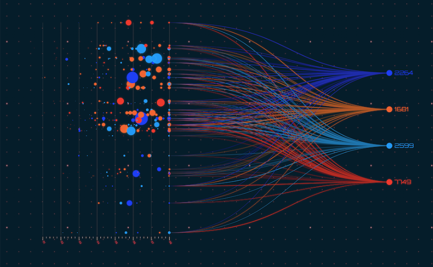

In this project, i designed a HR database with inspiration from W3resource, while maintaining data and query originality. I performed data manipulation, cleaning using SQL. i carried out research and created complex queries.

These are my projects posted in my Github repositories. These includes Python, SQL etc projects. here.

These are my Tableau visualisation projects. Some of them are the visualisations of my SQL projects. The projects include Brazillian eCommerce market insight, Vaccination in the UK by age and ethnicity, UK bank's customers demographics, Support of abortion in the US etc.
I set out in this project to explore the Global Covid-19 burden in terms of cases and deaths in MySQL. The Tableau visualisation can be found here.

In this project, i performed data cleaning on Nashville housing datasets using MySQL. Many updates were made to the datasets and the attributes were also updated
I used python libraries (Pandas, Matplotlib, Seaborn etc) to explore the US innercity housing datasets. The data structure, missing and NA values and outliers were explored.

This project was carried out with inspiration from Youtube videos and a simple calculator i built while taking a Python course.